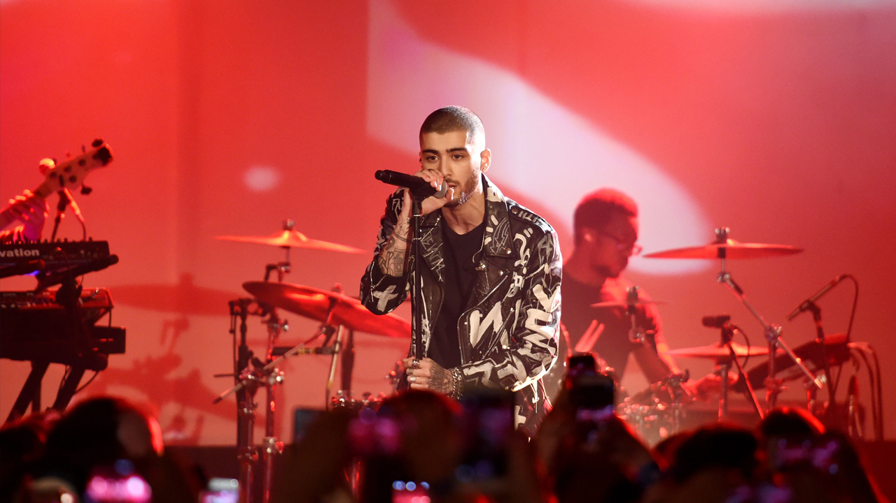
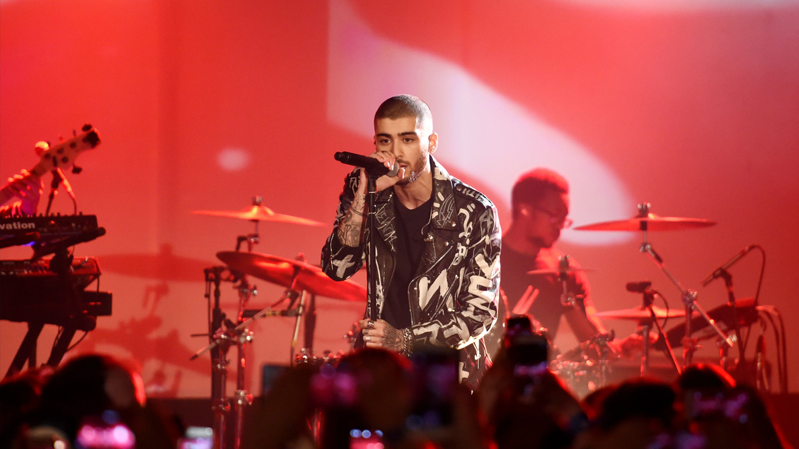

Shéyaa Bin Abraham-Joseph, better known by his stage name 21 Savage, is a British-born American rapper,
songwriter and record producer. Born in London, he moved to Atlanta, Georgia when he was 7 years old.
Event Date: 13 June 2020
Event Time: 13:30 - 16:30

Charles Otto Puth Jr. is an American singer, songwriter, and record producer. His initial exposure came
through the viral success of his song videos uploaded to YouTube.
Event Date: 15 June 2020
Event Time: 11:30 - 13:30

Amalaratna Zandile Dlamini, known professionally as Doja Cat, is an American singer, rapper and songwriter.
She first rose to prominence with the release of the music video for her song "Mooo!", which went viral in 2018.
Event Date: 16 June 2020
Event Time: 15:30 - 17:30
Ari Staprans Leff, known professionally as Lauv, is an American singer, songwriter and record producer based in
Los Angeles. His debut EP Lost in the Light was released in 2015 and his compilation album I Met You When I Was
18 was released in 2018.
Event Date: 21 June 2020
Event Time: 10:30 - 12:30

Montero Lamar Hill, known as Lil Nas X, is an American rapper, singer, and songwriter. He came to international
attention for his country rap single "Old Town Road", which first achieved viral popularity on the micro-platform
video sharing app TikTok in early 2019, and was diamond certified by November the same year.
Event Date: 27 June 2020
Event Time: 13:30 - 16:30

Madison Elle Beer is an American singer. Beer's music career began at the age of 13 when Justin Bieber tweeted a
link to a cover she performed on YouTube. She was subsequently signed to Island Records, and she began recording
and releasing singles over the next few years
Event Date: 05 July 2020
Event Time: 12:30 - 17:30

Rodrick Wayne Moore Jr., known professionally as Roddy Ricch, is an American rapper, singer, and songwriter. He is
signed to Atlantic Records through his imprint, Bird Vision Entertainment. He released his debut mixtape Feed Tha
Streets in 2017 and his second Feed Tha Streets II in 2018.
Event Date: 13 July 2020
Event Time: 14:30 - 17:30
George Kusunoki Miller, better known by his stage name Joji and formerly by his online aliases Filthy Frank and Pink Guy,
is a Japanese singer-songwriter, record producer, author, and former Internet personality and comedian.
Event Date: 14 July 2020
Event Time: 15:30 - 18:30
Nicole Zefanya, known professionally as NIKI, is an Indonesian singer, songwriter, and record producer.
Event Date: 17 July 2020
Event Time: 18:30 - 22:30

Brian Imanuel Soewarno, known professionally as Rich Brian, is an Indonesian rapper, singer, songwriter, and
record producer. He is known for his viral debut single "Dat $tick", which was first released in March 2016
on SoundCloud. The single was later certified gold by RIAA.
Event Date: 20 July 2020
Event Time: 14:30 - 18:30

Michael Dapaah is a British actor, rapper, and comedian best known for portraying the fictional rapper Big Shaq. He is
also known for his mockumentary SWIL, which focuses on four characters and their journey to success.
Event Date: 22 July 2020
Event Time: 17:30 - 21:30

Billie Eilish Pirate Baird O'Connell is an American singer and songwriter. She first gained media attention in 2015 when
she uploaded the song "Ocean Eyes" to SoundCloud, and it was subsequently released by Interscope Records subsidiary Darkroom.
Event Date: 24 June 2020
Event Time: 10:30 - 14:30

Selena Marie Gomez is an American singer, songwriter, actress, and television producer. Born and raised in Texas,
Gomez began her career by appearing on the children's television series Barney & Friends.
Event Date: 27 June 2020
Event Time: 15:30 - 18:30